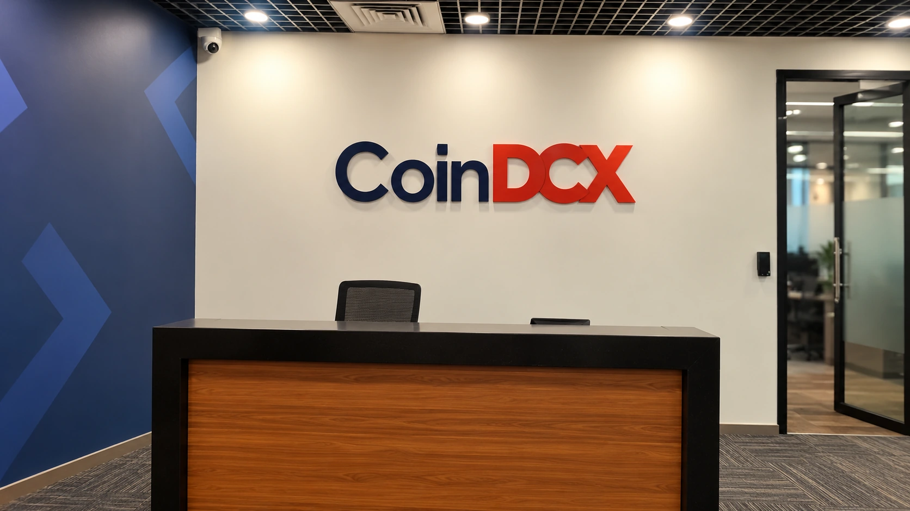

CoinDCX Confirms $15.99 Million Loss After Old-Wallet Sweep Failure
CoinDCX says it will absorb a 15.99 million USDT loss after a failed sweep service left deposits in previously compromised wallet infrastructure.

CoinDCX has confirmed a loss of 15.99 million USDT after an automated service failed to move deposits out of old wallet infrastructure. In an October 25 update, the Indian cryptocurrency exchange said it would absorb the loss. The admission replaces uncertainty about suspicious transfers with a confirmed custody loss.
The exchange says customer funds remain secure and its active trading, deposit and withdrawal systems have continued operating. Those are company statements, not the conclusion of an independent audit reviewed by TTN. The distinction matters because stablecoin transfers recorded on a blockchain can establish movements between addresses, but cannot by itself establish the full relationship between an exchange's assets and customer liabilities.
An account credit is not a completed sweep
CoinDCX says the affected infrastructure was connected to a wallet compromised in July 2025 and subsequently deprecated. Some customers continued using older deposit addresses. According to the company, a sweeping service failed, allowing funds to accumulate there instead of moving into the intended custody setup. It acknowledged that communication about the incident should have come sooner.
The operational distinction is between crediting an exchange account and moving the underlying tokens. CoinDCX describes these as separate processes. A customer can see a deposit credited while the corresponding tokens remain at the receiving address awaiting a sweep. A balance displayed in an app therefore does not necessarily reveal where the associated assets are being held on-chain at that moment.
That creates a control problem even when a customer-facing service appears normal. A monitoring system needs to detect whether the custody process completed, rather than merely whether the customer received an account credit. Retiring an address also requires a clear policy for later deposits. Calling infrastructure deprecated does not make funds arriving there inaccessible to someone who still controls a compromised key.
What the independent tracing shows
Bitquery's investigation, updated October 23, tracked the movement of approximately 15.99 million USDT from 40 TRON wallets. It reported that about 15.82 million came from one address where deposits had accumulated over months. Its analysis also identified routine sweeping activity shortly before the theft, complicating any assumption that the entire older setup had simply become inactive.
The same investigation reported that Tether froze roughly $2.21 million across nine wallets late October 22. That figure must be kept attached to its date and meaning. Frozen tokens are not necessarily returned tokens. The tracing report does not establish that the full loss has been recovered, and it should not be used as a current, independently verified recovery balance for October 25.
Blockchain analysis is valuable here because it preserves a sequence of observable transactions. Its limits are equally important: address labels and fund flows are not a complete set of exchange books. The evidence supports questions about how assets moved and which controls failed. It does not automatically prove how every customer's account was treated or whether any particular receiving intermediary participated in wrongdoing.
Crypto.news reported Sunday's confirmation after earlier public responses to the suspicious activity. The contrast highlights the importance of precise incident communication. An exchange can distinguish active systems from older infrastructure, but that distinction is not a substitute for explaining what was lost, when the loss was established and who bears the financial impact.
A stable token can still carry custody risk
This was not presented as a USDT depeg. The relevant risk was access to tokens held at exchange-controlled addresses. Our stablecoin risk guide explains why price stability does not eliminate issuer, network or custody risks. A token can remain close to its intended dollar value while being stolen from a compromised wallet.
Readers should also separate this incident from failures at a blockchain's consensus layer. In the recent Initia security incident, the network response itself was central to the story. Here, the confirmed explanation concerns an exchange's legacy custody workflow. Treating all cryptocurrency incidents as interchangeable makes it harder to identify which safeguard actually needs improvement.
For customers assessing an exchange response, the most useful follow-up evidence would include an independently assessed incident timeline, reconciliation of affected assets and liabilities, and confirmation of any funds actually recovered. A promise to absorb a loss addresses who is supposed to bear it; evidence of completed remediation addresses whether the same operational exposure remains.
CoinDCX says it plans stronger monitoring of legacy infrastructure and clearer warnings about older deposit addresses. It has not supplied a precise public closure timetable in the update reviewed here. Sunday's admission provides a clearer loss figure and mechanism, but the broader test is whether the exchange can demonstrate that retired infrastructure no longer creates an unmonitored route for customer deposits.
Sources and methodology
Sources checked October 25, 2026. Reported findings and company or regulatory statements are attributed in the text; discussion of financial implications is editorial analysis. The generated cover is illustrative.